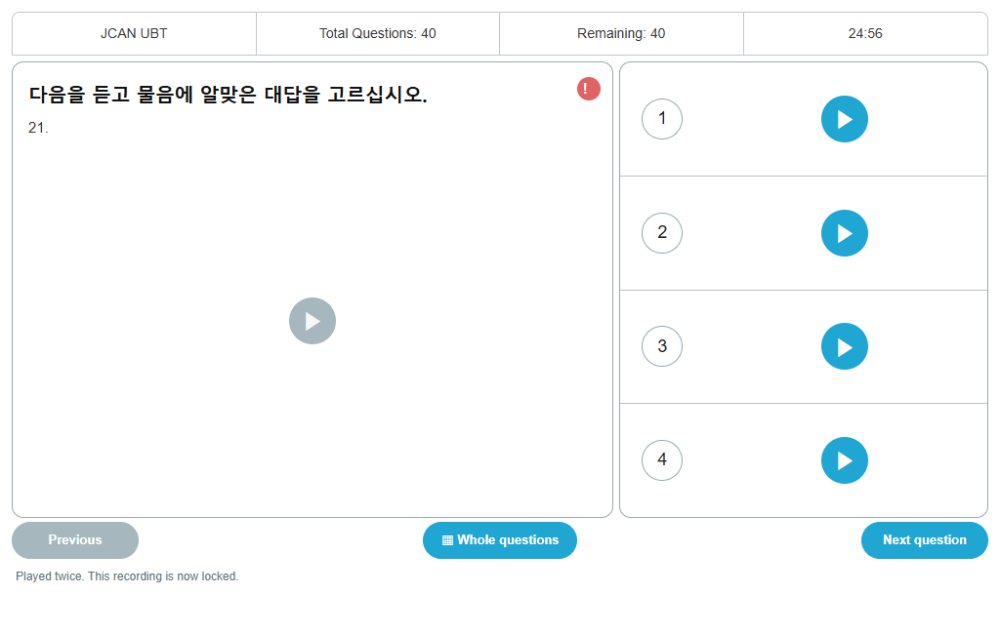

Practice examsFamiliar formats.
Familiar formats.
Focused preparation.
CBT and UBT practice with reading, listening, timed sections, graph questions, and an answer review after submission.

Reading & listeningBook 1 & Book 2Timed practice
Start where you need to.
Begin with reading or listening, or focus on a single section.
A fresh set for the next attempt.
Question selection avoids the immediately previous test in the same browser.
Leave with something useful.
Review the answers and download a result sheet after submission.